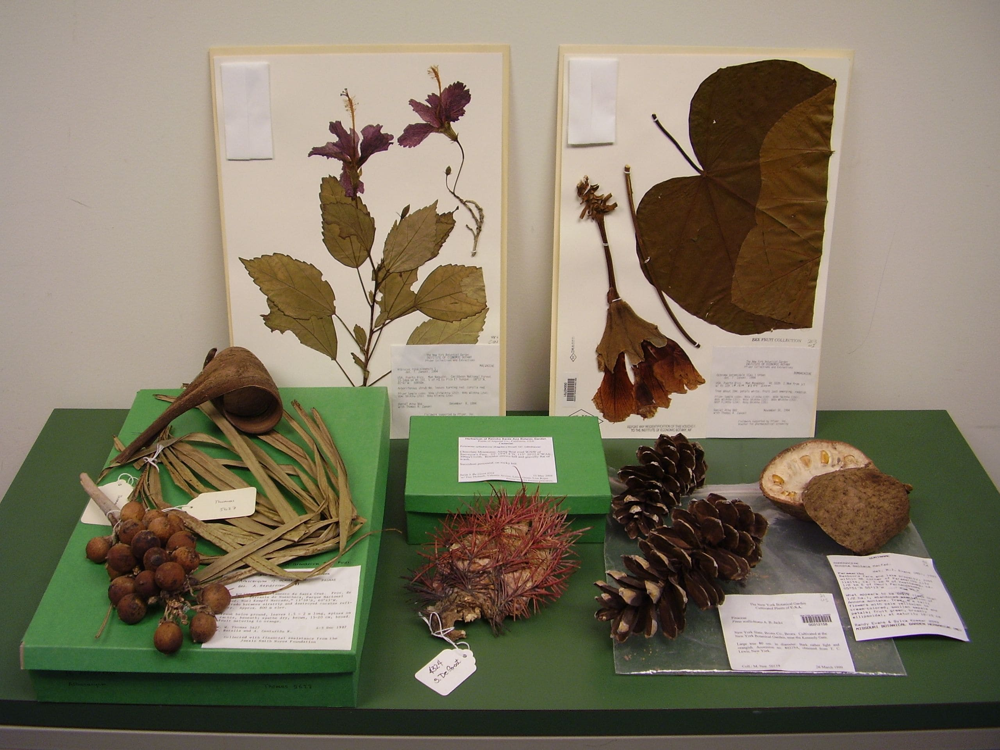
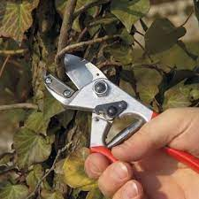
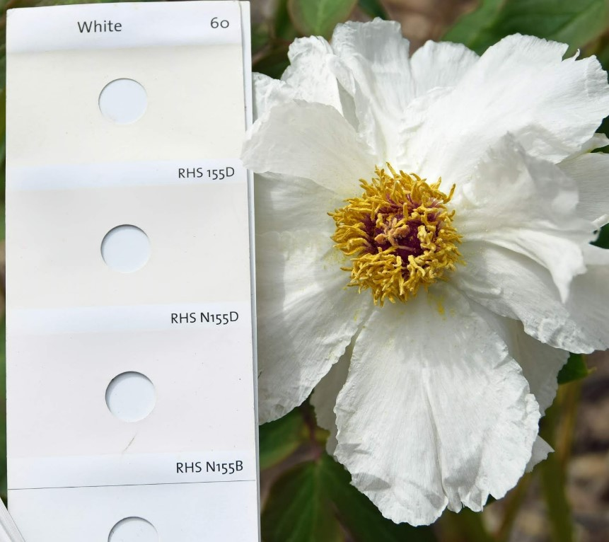
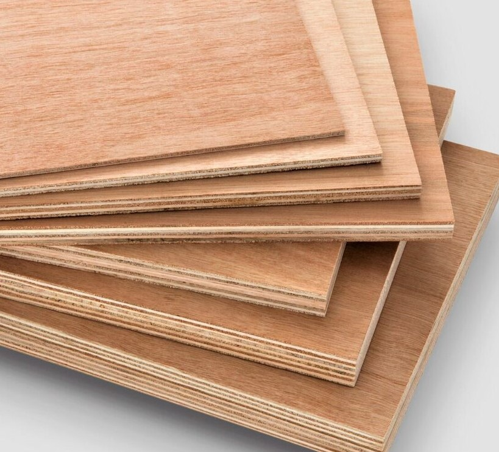
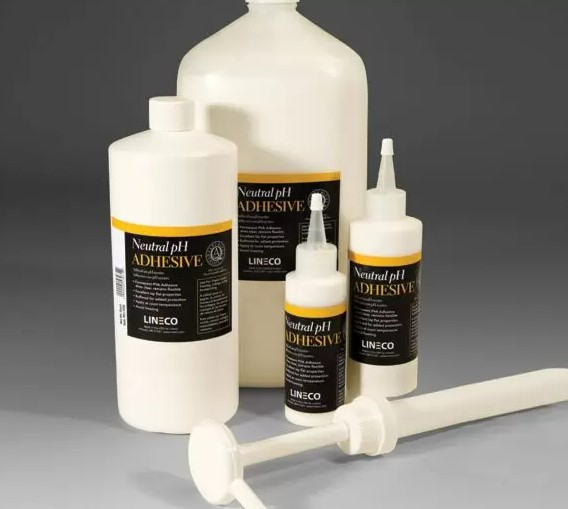
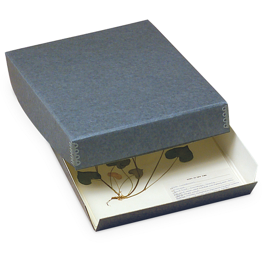

☰
Classification
Resources
Tutorial
Tools
Care
Identify
Contribute
Enquiry
Welcome to the tools
Your guide to understanding on the tools being used to create your own herbarium specimens.
What are the tools required?
According to
The tutorial
, there are 5 stages to preparing herbarium specimens.
Collecting
Describing
Pressing
Mounting
Storage

Image of all the stages
The Tools According to the Stages
Collecting
There's a list of tools required
Plastic bags
Place collected specimens into plastic bag
Tape measure
Used to measure the specimen according to desired size
Secateurs
Used to careful and meticulous cuts for the specimen
Labels/sticky notes
To take down notes
Pens/pencils
The write down the notes
Camera
Take pictures of the specimens

Person using secateurs to cut branches
Describing
There's a list of tools required
RHS Colour Chart
Compare and contrast with the colours of the specimen

Comparing colors with a flower
Pressing
There's a list of tools required
Two pieces of hardboard/plywood measuring approximately 40 x 30cm (16 x 12in)
To sandwich the specimen
Sheets of blotting paper
To absorb excess water from the specimen
Sheets of corrugated card
To absorb shock from accidents such as dropping the specimen and to reduce damage
Foam sheet
To prevent sticking of the layers
Bricks/telephone directories/weighty books/straps
To weigh down the whole press

Wood that is used for pressing
Mounting
There's a list of tools required
Acid-free paper measuring 42 x 26.5cm/ A3
Acts as a place to place the specimen
Labels, preferably acid-free
To label the specimen
Tweezers
To precisely place the plant
Scissors
To cut any excess specimen
Neutral-pH PVA adhesive
To glue the specimen onto the paper
Neutral-pH adhesive, gummed linen hanging tape
To stick the specimen onto the paper

Glue used for sticking the specimen
Storage
There's a list of tools required
Plastic bags
To store the specimen
Freezer
To freeze the specimen and to kill any pest
Boxes
To store the final specimen

Box used to store the specimen